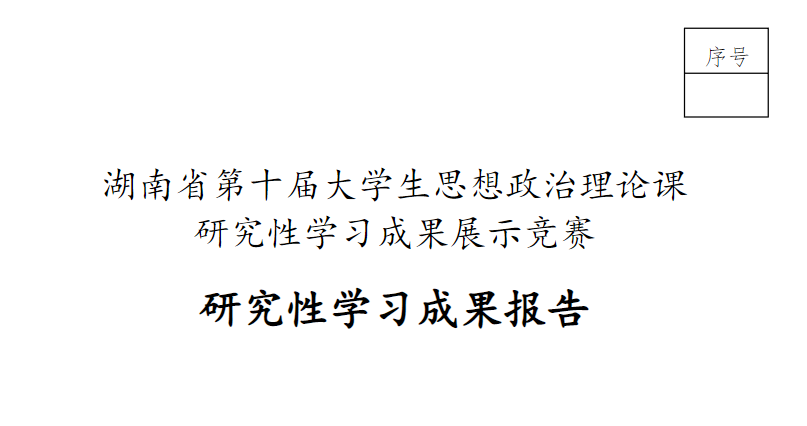

研究性学习成果获奖作品
本研究立足于数字技术革命性变革的时代背景，聚焦数字命运共同体的内涵阐释、现实挑战、构建路径与核心价值，试图从学理层面回应全球数字治理的现实难题。作为广告学专业的学生，参与这一研究不仅拓展了我对数字时代社会结构的理解，更训练了我从宏观视角把握社会议题、从复杂信息中提炼核心逻辑的能力。

项目总览
本研究以“数字命运共同体构建的路径和价值”为核心议题，从学理内涵、现实挑战、解决路径、核心价值四个维度展开系统探究。在学理层面，界定数字命运共同体为“依托先进数字技术搭建全球数字交往网络，形成相互联系、命运与共的共同体体系”，并提炼其数字连通性、数字互惠性、数字调试性三大特征。在现实挑战层面，系统梳理了数字公共领域失序（数字监控、算法覆盖、平台权力渗透）、数字个人领域失真（虚拟实践认知偏差、屏幕控制）、国家安全威胁（技术层面与社会层面）、数字资本全球化扩张四大困境。在路径层面，提出培养数字人才、把握数字经济发展自主权、加强国际交流、推进全球化进程四维策略。在价值层面，揭示数字命运共同体对数字技术向善发展、全球数字治理难题化解、人类共同利益交融的深远意义。
本研究获湖南省第十届大学生思想政治理论课研究性学习成果展示竞赛校级三等奖，是一次从宏观视野到逻辑推演的完整学术训练。
查看链接：【金山文档 | WPS云文档】 数字命运共同体构建的路径和价值研究 https://www.kdocs.cn/l/crwoEEfMhMQL
创作核心过程
选题确立与问题意识形成
研究始于对习近平总书记“构建网络空间命运共同体”论述的关注。我们发现，数字技术革命性变革的时代背景下，数字命运共同体作为人类命运共同体理念在数字空间的具体延展，具有重要的理论价值和现实意义。
文献梳理与研究框架搭建
围绕选题，我们进行了系统的文献检索与梳理： 国内研究方面，梳理了数字命运共同体内涵、困境、路径、价值四大方向的研究成果，涵盖李泉、黄浩然、徐昕、罗理章等学者的核心观点 国外研究方面，研读了丹·席勒《数字资本主义》、克劳斯·施瓦布《第四次工业革命》等著作，把握国际学界对数字技术社会影响的宏观判断 在评述基础上，发现现有研究存在内涵拓展不足、路径梳理不清、研究方法单一等问题，确立了本研究的切入方向
逻辑构建与框架确立
基于文献梳理，我们确立了“内涵阐释→现状剖析→解决路径→价值梳理”的四段式研究框架
成果撰写与反复打磨
撰写过程中经历了多轮修改，包括但不限于措辞，逻辑框架，论证的严密性，数据与个人思考的融合等等
项目亮点
选题有鲜明的时代性与现实关切
紧扣习近平总书记重要论述和国家数字战略需求，聚焦“数字命运共同体”这一前沿议题，既回应了全球数字治理的时代课题，又贴合“数字中国”战略落地的现实需要，体现了敏锐的问题意识和宏观视野。
研究框架逻辑严密，层层递进
“内涵阐释→现状剖析→解决路径→价值梳理”的四段式结构，形成“是什么→有什么问题→怎么解决→为什么重要”的完整逻辑闭环。
跨学科视野拓展了广告学专业的思维边界
作为广告学专业学生参与思政类学术研究，本项目的独特价值在于：训练了从宏观社会议题中提炼洞察的能力，培养了系统性文献梳理和信息整合的习惯，强化了逻辑推演和论证严密的思维习惯——这些都是优秀广告策划人必备的底层能力。